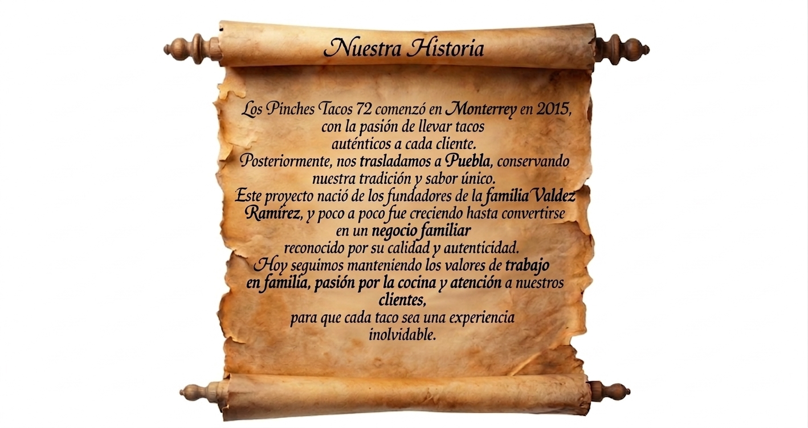

Bienvenidos a Los Pinches Tacos 72 🌮
Donde cada mordida es una explosión de sabor 🔥
Disfruta de nuestros Tacos, Burritos, Papas Asadas y el irresistible Corte T-Bone, todo preparado con 100% sirloin🥩
Con la tradición de Monterrey los venimos a acompañar

×

×

Nuestra Historia
Los Pinches Tacos 72 comenzó en Monterrey en 2015,
con la pasión de llevar tacos
auténticos a cada cliente.
Posteriormente, nos trasladamos a Puebla,
conservando nuestra tradición y sabor único.
Este proyecto nació de los fundadores de la familia Valdez Ramírez,
y poco a poco fue creciendo hasta convertirse
en un negocio familiar
reconocido
por su calidad y autenticidad.
Hoy seguimos manteniendo los valores de trabajo
en familia, pasión por la cocina y atención a nuestros clientes,
para que cada taco sea una experiencia
inolvidable.